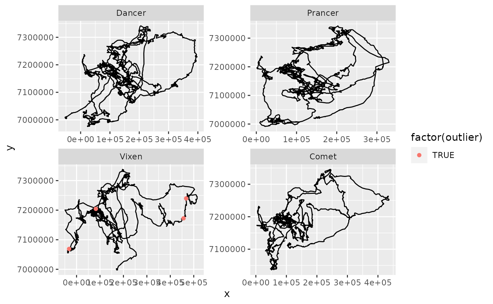

removeOutliers.RdFunction to remove almost duplicated timestamps. Occasionally the GPS device transmits locations at 1 or 2 minute intervals despite the duty cycle being set to 1 day, 8 hours, or - at most - 2 hours. This leads notably to highly unrealistic speeds (e.g. several kilometers in one minute). This function flags locations with very short intervals or unrealistic speeds as outliers.
removeOutliers(df, steps = 10, max.speed = 50, min.interval = 2)a data frame containing columns: ID as individual identifiant, x and y: relocations of individuals (in a metric system) Time: vector (of class POSIXct)
if specified, the number of cleaning steps to be performed (default is 10)
threshold (in km/hour) for removing outliers. Default: 50 km/hr
threshold (in minutes) for mininum intervals between location. Default: 2 min.
The original data frame with an additional column labeled "outlier".
require(TuktuTools)
data(caribou)
# flag outliers
caribou.cleaned <- removeOutliers(caribou)
#> Cleaning Step 1
#> Number of 'outliers' detected: 4
head(caribou.cleaned)
#> ID sex Time Year Lon Lat x y
#> 1 Dancer f 2002-04-01 00:00:00 2002 -133.8427 62.77028 -51589.97 7006600
#> 2 Dancer f 2002-04-01 08:00:00 2002 -133.8394 62.76716 -51480.43 7006228
#> 3 Dancer f 2002-04-01 16:00:00 2002 -133.8453 62.77767 -51584.51 7007437
#> 4 Dancer f 2002-04-02 00:00:00 2002 -133.8643 62.80010 -52121.93 7010074
#> 5 Dancer f 2002-04-02 08:00:00 2002 -133.8621 62.79918 -52024.50 7009953
#> 6 Dancer f 2002-04-02 16:00:00 2002 -133.8625 62.80007 -52030.49 7010055
#> outlier
#> 1 FALSE
#> 2 FALSE
#> 3 FALSE
#> 4 FALSE
#> 5 FALSE
#> 6 FALSE
table(caribou.cleaned$outlier)
#>
#> FALSE TRUE
#> 18070 4
# visualize
ggplot(data=caribou.cleaned, aes(x=x, y = y)) + geom_path() +
geom_point(data= caribou.cleaned %>% subset(outlier == "TRUE"), aes(colour=factor(outlier))) +
facet_wrap(~ID, scales = "free")

which(caribou.cleaned$outlier == "TRUE") # [1] 12263 12326 13394 13689
#> [1] 12263 12326 13394 13689
# check those locations
caribou.cleaned[12262:12264,] # one minute interval
#> ID sex Time Year Lon Lat x y
#> 12262 Vixen f 2008-03-21 08:00:00 2008 -124.0037 64.67039 452089.8 7172100
#> 12263 Vixen f 2008-03-21 08:01:00 2008 -123.9105 64.67408 456544.9 7172444
#> 12264 Vixen f 2008-03-21 09:01:00 2008 -123.9125 64.67571 456449.2 7172628
#> outlier
#> 12262 FALSE
#> 12263 TRUE
#> 12264 FALSE
caribou.cleaned[12325:12327,] # one minute interval
#> ID sex Time Year Lon Lat x y
#> 12325 Vixen f 2008-04-09 08:00:00 2008 -123.6936 65.27902 467632.2 7239729
#> 12326 Vixen f 2008-04-09 08:01:00 2008 -123.6936 65.27944 467632.7 7239777
#> 12327 Vixen f 2008-04-09 09:01:00 2008 -123.6927 65.28142 467679.2 7239996
#> outlier
#> 12325 FALSE
#> 12326 TRUE
#> 12327 FALSE
caribou.cleaned[13393:13395,] # one minute interval
#> ID sex Time Year Lon Lat x y
#> 13393 Vixen f 2009-04-02 00:00:00 2009 -133.6406 63.32611 -31115.93 7066172
#> 13394 Vixen f 2009-04-02 00:01:00 2009 -133.6640 63.34903 -31847.87 7068893
#> 13395 Vixen f 2009-04-02 01:01:00 2009 -133.6478 63.34285 -31158.98 7068077
#> outlier
#> 13393 FALSE
#> 13394 TRUE
#> 13395 FALSE
caribou.cleaned[13687:13690,] # one minute interval
#> ID sex Time Year Lon Lat x y
#> 13687 Vixen f 2009-07-25 07:02:00 2009 -131.9479 64.71133 74603.62 7206401
#> 13688 Vixen f 2009-07-25 08:01:00 2009 -131.9479 64.71133 74603.62 7206401
#> 13689 Vixen f 2009-07-25 08:02:00 2009 -131.7831 64.70309 82271.21 7204390
#> 13690 Vixen f 2009-07-25 09:03:00 2009 -131.5970 64.67657 90677.27 7200239
#> outlier
#> 13687 FALSE
#> 13688 FALSE
#> 13689 TRUE
#> 13690 FALSE